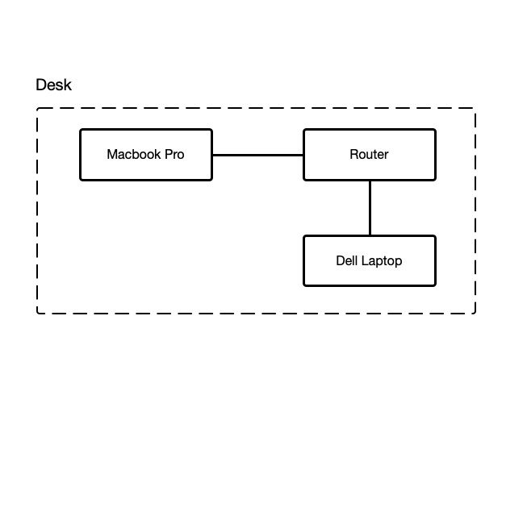
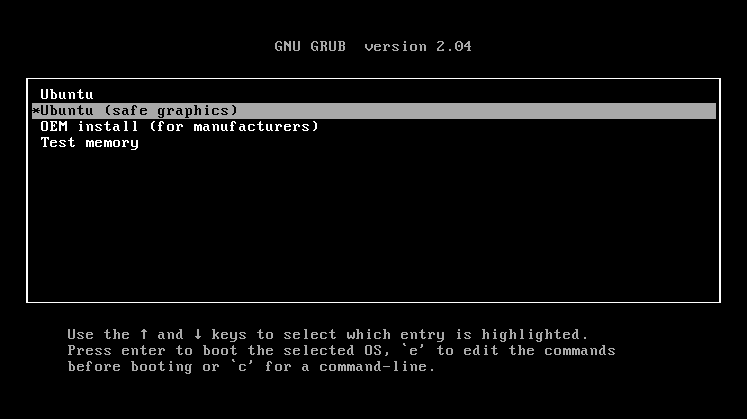
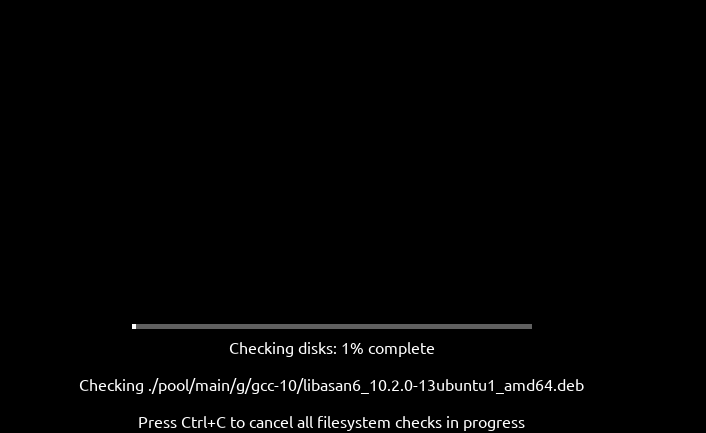
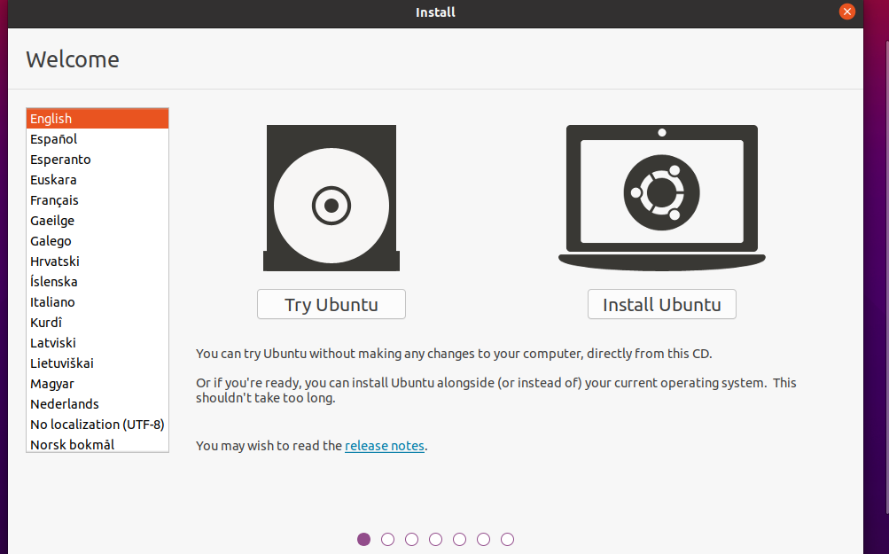
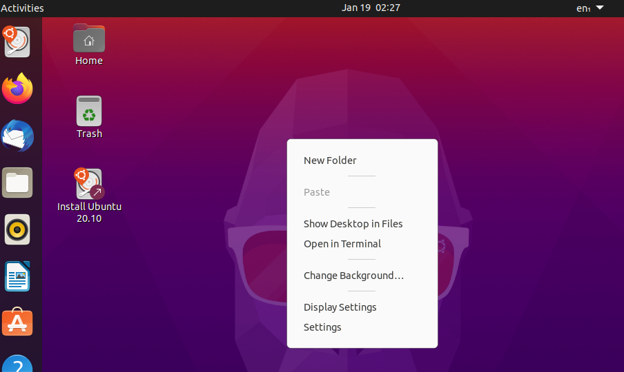
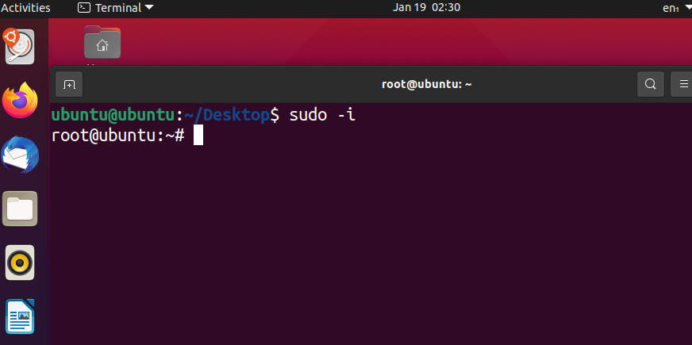
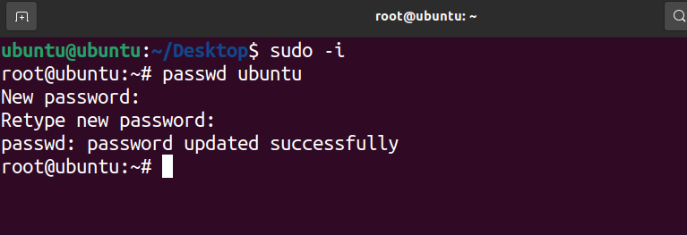
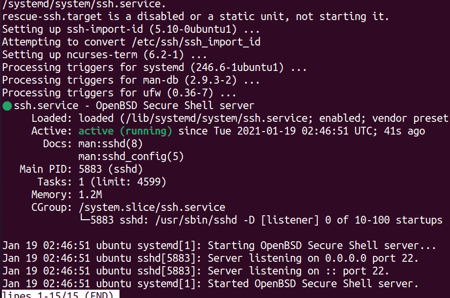
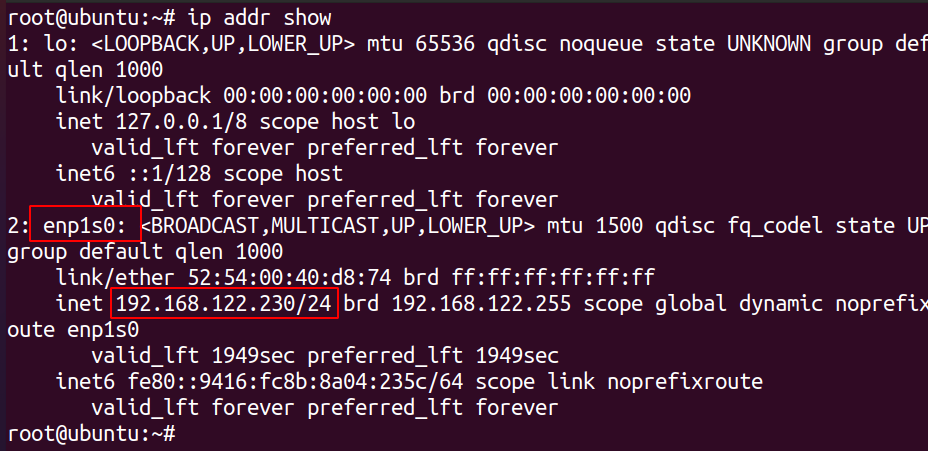
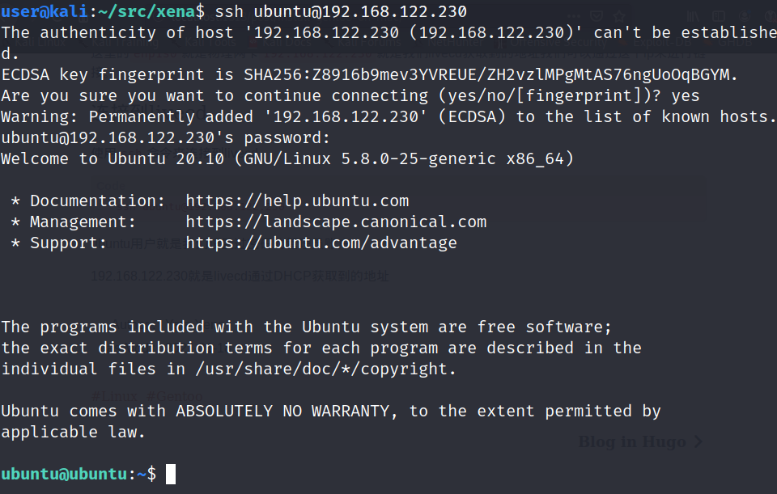

在Mac上安装Gentoo Linux
Contents
缘起
我是一个非常贫苦刚刚步入社会的学生。
今年毕业之后因为疫情的影响好不容易进了一家公司，但是日常的开销不足以让我更换掉现在的机器（只有单个核心的年迈机器。）。
前些日子在和一位学姐的茶会上，聊起了工作的一些事情可能是听到了我的抱怨了吧哈哈哈，当时说要送我一台笔记本，当时还在想不会吧？这两天收到了发现是一台Macbook Pro 2015年的15寸版本，还有一个yubico。
配置大概是这样子的
| 型号 | CPU | 内存 | 硬盘 |
|---|---|---|---|
| Macbook Pro 2015 15inch | I7 4770HQ | 16G | 2TB |
在此之前一直都有想要试试看Gentoo的想法，但是奈何手上的笔记本只有可怜的单核2G内存，因为日常还需要使用的缘故结果自然也是不了了之。
这次就有机会尝试一下了。
环境准备
先来说明一下安装Gentoo的环境准备。
我这里是准备了以下：
- Macbook Pro * 1 （安装机器）
- Dell 老机器 * 1 （我将会在这个节点进行操作）
- U盘 * 1 （安装介质）
拓扑图如下：

制作安装介质
之前一直有听说Gentoo安装比较麻烦，看了一些关于Gentoo安装的文档，我认为难点在于内核的配置上，其他应该问题不大（😂）。
为了能够最大程度少去配置内核我这里选择了Ubuntu Desktop Livecd，将会以这个内核配置为基础进行自己的内核配置
下载ISO文件
|
|
制作USB启动盘
将U盘插入这台老的Dell机器然后使用dd刻录安装介质
|
|
耐心等待程序执行完成。
等到执行完成之后你就有了一个Ubuntu 20.10 Desktop的安装介质
启动安装介质
将制作好的启动介质插到Macbook Pro上然后按住Option键再按开机，会出现一个EFI的选项，这个EFI选项就是我们的Ubuntu安装介质选择这个然后回车启动！
接下来会出现一个Grub菜单，选择 safe graphical 这个选项回车。

接下来会检测磁盘分区如果不喜欢可以选择 Ctrl+c 结束掉。 
最后来到Ubuntu的欢迎界面，这里选择 Try Ubuntu 
配置SSH
首先右键桌面打开终端：

输入 sudo -i 提升为root用户

配置密码
为了能够正常连接到这个livdcd环境还需要给这个livecd配置一个密码
|
|

配置
openssh-server
除此之外还需要配置openssh-server来让我的另外一台电脑可以通过ssh进行链接
|
|

如上图所示可以看到openssh-server已经运行了，接下来我们需要验证一下是否可以正常链接。
使用ip命令查看当前主机分配到的ip
|
|

这里的enp1s0就是物理网卡192.168.122.230就是我们livecd获取到的地址我们可以通过这个ip来进行链接。
连接到livecd
使用ssh命令来连接到livecd
|
|
ubuntu用户就是我们设置过密码的管理员账户
192.168.122.230就是livecd通过DHCP获取到的地址

安装Gentoo
在能够正常连接到livecd之后我们就可以开始安装Gentoo了
分区
Author Yafa Xena
LastMod 2021-01-18